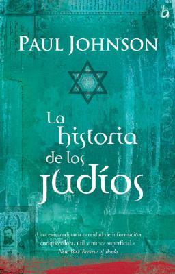

La historia de los judíos (Spanish Edition)
Reseña por Jorge I. Zuluaga

Ver reseña en GoodReads (necesita cuenta)
Esto es exactamente lo que siento después de terminar mi primer libro del gran historiador Paul Johnson ¡que buen escritor! ¡que buen divulgador de la historia!
Como lo he dicho en muchas de mis reseñas, la historiografía (o como la llamamos informalmente, la historia) no es precisamente la disciplina más fácil de divulgar.
Es por eso que encontrar buenos libros y autores de divulgación histórica, es simplemente ¡muy afortunado!.
Este es precisamente el caso de Paul Johnson. En el caso de este, mi primer libro de este autor, en cerca de 800 páginas, Johnson te lleva por un recorrido de más de 4.000 años de historia, de una cultura ajena a la mayoría de nosotros - los que no somos judíos, pero al mismo tiempo crucial para la historia del resto de la humanidad, como termina justamente demostrando; y lo hace en un estilo espontáneo y fresco que entretiene casi como si leyeras una novela.
Ya me conseguí otros dos libros de Johnson y espero estar reseñándolos pronto.
Pero me estoy extendiendo mucho hablando del autor y no del libro. Vamos al grano, es decir, al libro.
En pocas frases ¿de qué trata el libro?. El nombre del libro lo dice todo, no hay ningún truco editorial ahí. Solo debo agregar, aunque es bastante obvio, que deben prepararse para recorrer 4000 años de historia; no solamente de los que llamamos de forma un poco simplista "judíos" (en realidad se trata de una diversidad muy amplia de grupos humanos, nacionalidades, orígenes, posiciones éticas, morales e intelectuales distintas, que comparten una misma "raíz" religiosa y fuente de sabiduría, las leyes de Moises y los textos asociados); sino también de toda la humanidad que ha sido profundamente afectada por las ideas de esa cultura.
¿Cuál es más o menos la estructura del libro?. El libro se divide en 7 largos capítulos (muy, muy largos, ese es uno de sus defectos) que recorren en orden cronológico (sin faltar algo de solapamiento temporal inevitable) los períodos más importantes de la historia de los judíos: "los israelitas" (el surgimiento de los grupos humanos y los patriarcas de esta cultura milenaria), "el judaísmo" (que cuenta el nacimiento mismo de la religión, sus heroes, sus libros), "la catedrocacia" (los judíos en la edad media y el surgimiento de la cultura del respeto a los académicos y los libros), "el gueto" (la historia del aislamiento la persecución centenaria de los judíos, especialmente en europa y oriente cercano), "la emancipación" (la luz al final del túnel, con un desastre en la mitad), "el Holocausto (¡sí! con mayúscula ¡hubo un holocausto judío!) y "Sión" (el traumático surgimiento del estado de Israel en tiempos modernos).
Recomiendo muy especialmente tener a la mano el glosario al final del libro, que define los términos más usados por el judaísmo y que para nosotros, los "gentiles", pueden resultar confusos (algunos incluso siendo relativamente familiares): Sanedrín, yeshivá, shnorrer, rabino, halajá, Haskalá, maskil, etc. ¡Les aseguro que lo necesitaran!
¿Quiénes podrían encontrar este libro entretenido?. No todo el mundo, hay que reconocerlo. Yo no me conocía una pasión por la historia (como aficionado naturalmente) hasta que empece a leer novela histórica y de allí pase, casi sin pensarlo, a los libros de divulgación historiográfica. Pero no todos tenemos los mismos gustos, e incluso si los compartimos, no lo hacemos con la misma pasión. Este es un libro para quiénes como yo, encontramos sumamente "divertido" entender el origen de cosas que damos por sentado o que conocemos sin conocer realmente. La religión judía y sus "derivados", el cristianismo y el islam (¡me condenaran porque digo derivados) son justamente una de ellas.
Decime la verdad ¿qué es lo peor que tiene el libro?. La longitud de los capítulos. Siempre he considerado que no hay nada mejor para un lector que un libro que te ofrece pausas, que te regala pequeños triunfos imaginarios ("¡términe un nuevo capítulo!" "¡hoy leeré 5 capítulos"). Con "La historia de los judíos" no es posible. Los capítulos abarcan, el que menos, ¡más de 100 páginas! Para mí eso representaba 2 o 3 días de lectura (entre otras ocupaciones, naturalmente) y la posibilidad de perderme en el hilo de la historia.
Hay también muchos detalles de la historia que son un poco "irrelevantes" para quienes queremos una visión panorámica. Respeto, sin embargo, la elección del autor de profundizar en esos detalles: tal vez en una re lectura reconozca que todo era importante. Pero esos apartes, pueden hacer que muchos abandonden el libro, como debo confesar estuve tentado yo de hacerlo. Afortunadamente, la perseverancia, trae sus frutos (el último capítulo es particularmente útil para entender el conflicto árabe israelí que parece no tener un fin a la vista).
¿Cuál es la mejor parte?. Sin lugar a dudas, el principio, los dos primeros capítulos (es decir las primeras 250 páginas) que están dedicados a la historia antigua de los judíos. A mi me esclarecieron cantidades de cosas que creía saber sobre el origen no solo del judaísmo, sino también del cristianismo y el Islam. Mientras leía esos capítulos me compre mi primera biblia, especialmente para verificar las citas, conocer los libros de los que esta hecha (un aspecto muy interesante de la historia y la cultura de los judíos) y también, por qué no, para intentar leerla en algún momento.
¿Algún datico curioso que me anime a leer el libro?. ¿Uno? Tengo 200 etiquetas autoadhesivas pegadas en los bordes de las páginas. El libro abunda en datos curiosos, aclaración de ideas preconcebidas, nombres y lugares de los que pensabas cosas que no tienen nada que ver con la realidad.
Tal vez el que más me impresiono fue saber que los primeros antisemitas de la historia fueron los admiradísimos griegos. De ellos viene casi por línea directa, el odio irracional hacia los judío en el medio oriente en el tiempo del dominio romano y de allí se irradio a todos los pueblos que se alimentaron de esa fuente. De allí viene también el más "reciente" odio y persecución a los judíos en Rusia (donde hubo un Holocausto judío a fuego lento por casi un siglo).
En fin. Un libro, un autor ¡de todo mi gusto!. Quiénes me conocen y han seguido alguna de mis recomendaciones, no demoren en conseguir su ejemplar para "ponerlo en cola".